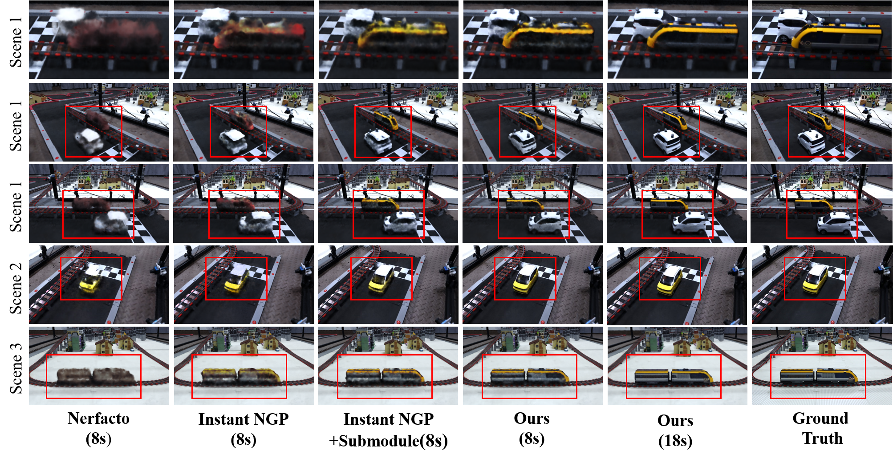
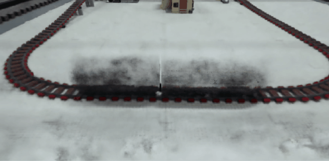
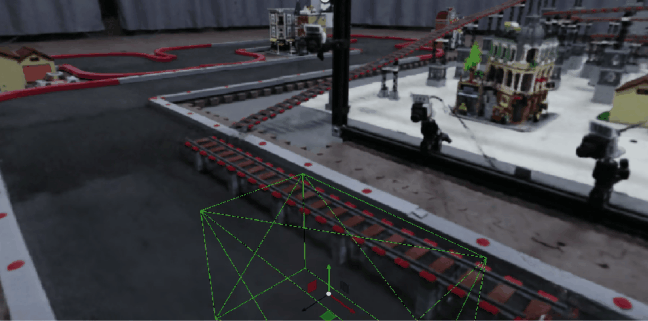
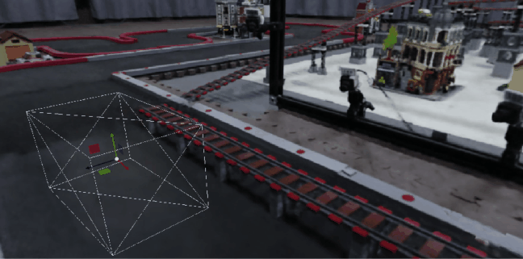

Exp.1 Add new objects quickly
All approachs starts from a well reconstructed empty scene here.
-

- 
| car+train | trains |
- 
- 
| yellow car | green car |
1Beijing Institute of Technology †Corresponding Author
Real-time reconstruction of dynamic road scene is crucial for intelligent traffic systems and vehicular forensics. Without extensive depth cameras, classic point cloud and mesh-based methods represent dynamic targets using generic templates, losing the real appearance of vehicles. We aim to utilize Neural Radiance Field(NeRF) for high-fidelity vehicle reconstruction and efficiently achieve motion by editing static scenes. Existing editable field methods rely on precise motion input to direct how objects within the scene move to avoid clipping, and they struggle to quickly add newly appearing objects. To address these problem, we propose a method for real-time dynamic road scene reconstruction that offers high fidelity alongside real-time performance. First, we spatially decomposes the scene, enabling real-time reconstruction of all newly entering vehicles by local training in key areas. Second, vehicles are mapped into the global scene for motion by warping rays across different fields. Furthermore, we devise a two-step method for directing vehicle motion in editable NeRF, estimating vehicles' six degrees of freedom (6-DOF) from 3D coordinates series and constraints imposed by the static scene's road. It improves scene interaction and reduce dependence on exact pose input for editable NeRF. We can also accommodates scenarios with occasional missing time-step inputs. Tested on RTX4080 Laptop, our system supports real-time interaction and rendering at 20fps with a 3-second delay at a resolution of 807*454. It integrates new vehicles into the complete scene within ten seconds, yielding satisfactory results without interrupting the real-time dynamic rendering process.
Overview of our pipeline. First, we spatially decompose the scene, using individual radiance fields to handle the static background and newly emerging objects. By sharing some network parameters and implementing composite rendering, we address the issue of quickly and high-quality integrating new objects into a reconstructed static scene. Second, we introduce a method for cross-field editing, which maps vehicles to their corresponding locations in the global scene by warping rays between different radiance fields. This allows for composite rendering of sub-fields while enabling real-time motion of multiple vehicles simultaneously. Third, we propose a method for estimating the 6-DOF of vehicles from sequences of target coordinates and scene information, guiding their movement. We reduce the reliance on precise pose inputs for dynamic editing. Estimation process includes 2 steps: Initially, we estimate rotation angles roughly through the displacement projection between frames. Subsequently, we refine the vehicle's 6-DOF with road constraints. The four block diagrams at the bottom briefly summarize the process, with the last three points corresponding to our main contributions.
| car+train | trains |
| yellow car | green car |
| BARF | L2G-NeRF | MC-NeRF(ours) | MC-NeRF(w/o) | Ground_truth |


| NeRF | BARF | L2G_NeRF | MC-NeRF(ours) |
The GIFs below illustrate changes in camera poses and field of view (FOV) across four different scenarios in the test set. Each animation showcases variations in camera pose from top, right, and front views, while FOV changes are demonstrated through adjustments in camera focal length.The fixed coordinate system at the image center symbolizes the world, whereas the mobile coordinate system denotes the camera, with the z-axis in blue, the x-axis in red, and the y-axis in green. The color of the moving sphere and the zoom lens camera model changes synchronously with the field of view (FOV).
| Ball Style | HalfBall Style |
| Room Style | Array Style |
@misc{
}